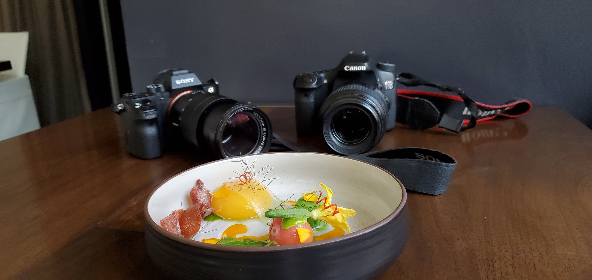

Offering food photography sessions for an interview. Seeking participants for a design research study.
Calling all restaurant owners, managers, and chefs!
Interested in getting your dishes captured by a professional photographer? We’re looking to chat with people in the restaurant industry about their accounting practices as a part of a design research study for a new app, and we’re offering a complimentary photography session for an interview.
Information
We’re currently working on a new app to help improve and streamline some of the most tedious processes in restaurant management.
I’d like to learn about how restaurants manage the various invoices they get from their purveyors.
You can see my photography portfolio here.
Interview
Duration: Less than an hour
Location: Flexible
We can have the interview in my office, at a coffee shop, at your restaurant– wherever is convenient. This will just be a casual conversation about your work and your experience with invoices.
Process and Details
How this works:
Screener
We’re looking to chat with people who directly work with invoices in a restaurant.
Click here to answer 3 short questions to see if you’re the right fit.Schedule & Prep
If you qualify and are selected, we’ll reach out to arrange a date, time, and location that works for the photography session and the interview.
Photography
This will be a casual, relaxed session. I like to shoot at the restaurant, to capture the food where people will enjoy it.
Details
Offer: This offer is for (4) dishes, each dish will have 3-6 photographs. If you’re interested in having more dishes photographed, we can discuss opportunities to add more.
Duration: Photographing a single dish takes about 15 minutes. The total duration of the shoot depends on how quickly the kitchen can prepare and send them out. Typically, shoots will last an hour.
Location: I prefer to shoot in natural lighting, though if the lighting in the location that we choose is insufficient, I can bring my own lights and gear.
Interview
Like the photoshoot, this should be a casual, relaxed chat about your work and your experience with invoices.
Recording: The interview will be recorded to aid us in our notes and help with our review.
Privacy: Everything that you say will be confidential and won’t be shared with anyone outside of our design team.
Delivery
Photos will be edited and ready to send a week after the interview.
Format: I’ll provide both the raw and jpeg files of the photographs.
Legal/Usage: I’ll provide a license for you to use these photos.
This is a great opportunity for independent chefs and restaurants. The nature of culinary arts is one of constant evolution as seasons and ingredients come and go. It’s important to take the time to document and immortalize our creations as we make them. I look forward to hearing from you!
Please pass this post on to any friends or colleagues that you think might be interested.
-Yin Zhao
